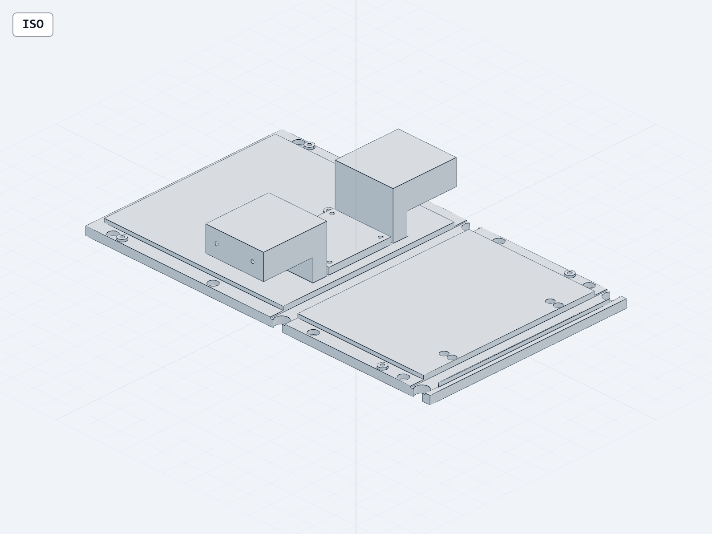

WP10：恢复执行与底板结构试验
整机尚未闭环。活动设计保持 V32 电气 / V30、V28 几何。V33增加约207 g仅降约0.4°C，并出现0.25 mm近隙，保留试验，不采用为最终底板。
内存清理后继续执行最高采样4.1 GiB；本轮重型检查均完成，无内存保护中止。
实际电气修复211位号 / 677针脚
13页ERC零错零警
主输入DRC零违规零未连接
真实CAD改件一个有效实体
三态新增金属零碰撞
保留974实例试验源计划
扩大导热截面的实际几何

加厚区3.5 mm；梁槽、CHB座、安装孔与盲孔保留。底板外辐射面积不变。甲板间隙1.5 mm、角件1.65 mm；梁0.25 mm、螺母代理0.325 mm仍需公差与工具检查。
打开CAD交互查看 · 下载STEP · 974实例试验计划同一输入热计算：仍然超温
| 5 mm网格情景 | CHB壳温/°C | 距105°C余量 |
|---|
| CHB_ONLY | 97.295 | 7.705 |
| BOARD_TERMINAL_ALLOCATION_0 | 105.837 | -0.837 |
| BOARD_TERMINAL_ALLOCATION_100 | 107.214 | -2.214 |
| ALL_KNOWN_NONARM_HYPOTHETICAL | 117.430 | -12.430 |
360 W筛查点、25 psi典型TIM参数与示例环境均保留。主板+Y热源块尚无实际安装热路；这些数值不是轨道或实测资格。数值验收通过不能替代温度合格。
安装位置筛查
枚举24个正交朝向，其中8个在声明搜索箱内生成网格、16个不适配，共18,000个有限网格位置；当前56个局部实例的3个短名单，经三态原生实体检查各有8、7、7个宿主交叠，全部拒绝。真实冲突含现行散热板、上甲板和机械臂驱动接口；旧设备预算体也保留分账。本次没有证明其他布局不可行。
逐位置、逐状态原生证据 · 筛查输入与排序